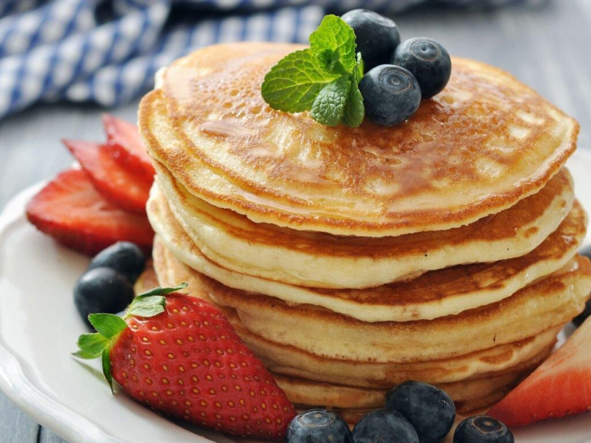

Panquecas

Panquecas fofinhas e levemente adocicadas, ideais para o café da manhã, acompanhadas de xarope de bordo, frutas ou chocolate, proporcionando uma experiência matinal deliciosa.
Ingredientes
- 1 xícara de farinha de trigo
- 1 colher de sopa de açúcar
- 1 colher de chá de fermento em pó
- 1/2 colher de chá de sal
- 1 ovo
- 1 xícara de leite
- 2 colheres de sopa de manteiga derretida
Modo de preparo
- Em uma tigela, misture a farinha, o açúcar, o fermento e o sal.
- Adicione o ovo, o leite e a manteiga derretida à mistura e mexa até obter uma massa homogênea
- Em uma frigideira antiaderente aquecida, despeje porções da massa para formar as panquecas.
- Cozinhe por cerca de 2 minutos de cada lado, ou até que estejam douradas.